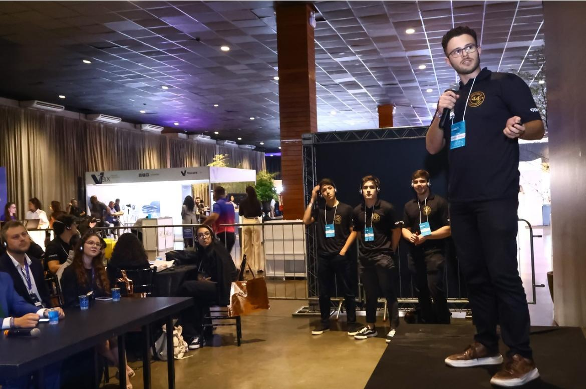

Ideathon · 2025
Ideathon Sescap
Competição de ideias voltada para soluções inovadoras no setor de serviços contábeis voltados a nova Reforma tributária. Desenvolvemos um sistema voltado para empresários que calculava os impostos e as taxas de câmbio dos produtos com base no seu CNAE. A ideia foi automatizar os re-cálculos de despesa de importação e exportação pós reforma tribútaria.